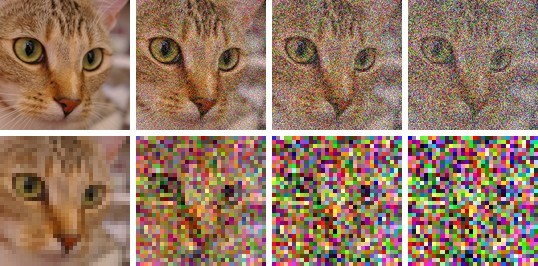
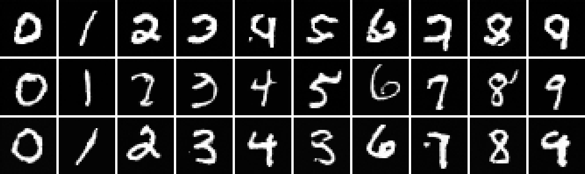
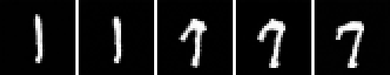

Lecture 16
SPC5004: Tools and Applications of Generative AI
Prof. Anthony E. Phillips
Friday, 20 November 2026
UNet2DModel with attention, trained with the same data, epochs and loss, did noticeably better.The same schedule, the same noise level, two sizes of the same photo:

\(t = 0, 100, 200, 300\). Top: 256 × 256 pixels. Bottom: 32 × 32, the size of the lab’s digits. Photo: scikit-image sample data, CC0.
How much of the image is left, \(\sqrt{\bar\alpha_t}\), for the lab’s linear schedule and for the cosine schedule:
With the linear schedule, less than 10% of the image is left by \(t = 644\). With the cosine schedule, that happens only at \(t = 935\).
Image left: \(\sqrt{\bar\alpha_t} =\) 0.56, the same for both sizes. Only how much you can still see differs.
Last lecture’s model generates an image: whatever comes out of the noise it started from.
Back to two-number “images”. Now each point has a label: ring, line or blobs.
“Any shape” uses the best guess over all the points: \(p(x)\). A label restricts the best guess to that shape’s points: \(p(x \mid y)\).
Give the network \(y\) as one more input, during training and during sampling.
\[\hat\epsilon_\theta(x_t, t) \quad\longrightarrow\quad \hat\epsilon_\theta(x_t, t, y)\]
But how do we feed a label into a UNet? The same way we already feed it \(t\).
\(t\) is a single integer, from 0 to 999. The network needs a vector.
UNet2DModel you’ll use in the lab, that’s 32 sines and cosines, turned into a time embedding of 128 numbers.Top: the 32 numbers for step \(t\), before the MLP (orange \(+1\), grey \(-1\)). Below: the same for every step, one thin column each. Every step gets its own pattern, just as every token position does: the slow numbers say roughly when, the fast ones pin down exactly when.
A label is one of a fixed set of classes, just like a token is one of a fixed vocabulary. So we embed it the same way: one learned vector per class.
torch.Size([1, 128])The rows start random and are learned with everything else. Nothing tells the model what “7” means: it finds out from which images carry that label.
diffusersfor batch in dataloader:
clean_images, labels = batch["images"], batch["labels"] # labels: new
noise = torch.randn_like(clean_images)
t = torch.randint(0, 1000, (len(clean_images),))
noisy_images = scheduler.add_noise(clean_images, noise, t)
noise_pred = model(noisy_images, t, class_labels=labels).sample # new
loss = F.mse_loss(noise_pred, noise)
...One label for the whole trajectory, every step. That’s all.
A small class-conditional model (1.5M parameters, no attention), trained on MNIST for about 20 minutes on a laptop. In each row, all ten images share the same noise, from start to finish; each column asks for a different digit.

The label decides which digit. The noise has a say in how it’s drawn: compare the slant in the first row with the second. And not every request succeeds: look at the 5 in the last row.
Eight 7s, from eight different starting noises:
The model has learned a distribution of 7s, not a single 7. Not all of them are good: one is a blob, and one could pass for a 2. Twenty minutes isn’t much training.
A class embedding is just a vector, so we can hand the model one it never saw in training: a blend of the rows for 1 and 7.

Next lecture: conditioning on text instead of a label, and a trick to make the model pay more attention to the condition.